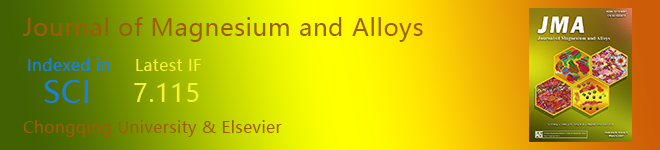

|

Guide for Authors
| Submit Your Articles
| Create E-alerts
| Table of Contents, Volume 9, Issue 1 |
|
The 2021 first issue of Journal of Magnesium and Alloys
published 4 review articles and 22 research articles. These articles include the topics of magnesium sulfur batteries, Mg-Ag-alloys, thermoelectric and so on. We hope these cutting-edge results will be useful references for your future work. The journal is open-access so the articles below are freely accessible.
|
Volume 9, Issue 1, 15 January 2021, Page ii View: PDF | DOI |
| Review article |
 |
Guohua Wu, Cunlong Wang, Ming Sun, Wenjiang Ding
Volume 9, Issue 1, 15 January 2021, Pages 1-20 View: PDF | DOI |
 |
Razieh Chaharmahali, Arash Fattah-alhosseini, Kazem Babaei
Volume 9, Issue 1, 15 January 2021, Pages 21-40 View: PDF | DOI |
 |
K.B. Nie, X.J. Wang, K.K. Deng, X.S. Hu, K. Wu
Volume 9, Issue 1, 15 January 2021, Pages 57-77 View: PDF | DOI |
| Research article |
 |
Qiannan Zhao, Ronghua Wang, Yuxin Zhang, Guangsheng Huang, ... Fusheng Pan
Volume 9, Issue 1, 15 January 2021, Pages 78-89 View: PDF | DOI |
 |
Xixi Dong, Lingyun Feng, Shihao Wang, Eric A. Nyberg, Shouxun Ji
Volume 9, Issue 1, 15 January 2021, Pages 90-101 View: PDF | DOI |
 |
J.P. Weiler
Volume 9, Issue 1, 15 January 2021, Pages 102-111 View: PDF | DOI |
|
 |
The Journal of Magnesium and Alloys provides an international medium for the publication of theoretical and experimental studies in magnesium science and engineering. Appropriate submissions to the Journal of Magnesium and Alloys include studies that investigate scientific and/or engineering factors that affect the metallurgy, processing, microstructure, properties, and applications of magnesium and alloys and reports that contribute to the body of knowledge by documenting the thinking, philosophy, and strategies of magnesium science and engineering. |
If you do not want to receive this kind of email, please CLICK HERE to cancel the subscription. |